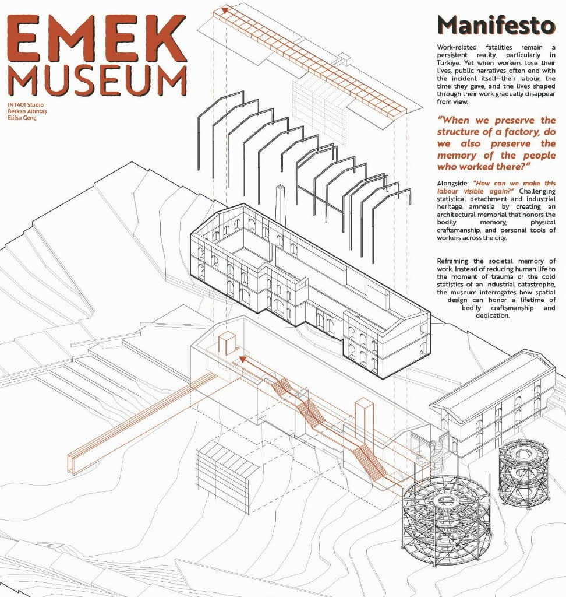

EMEK MUSEUM
Work-related fatalities remain a persistent reality, particularly in Türkiye. Yet when workers lose their lives, public narratives often end with the incident itself—their labour, the time they gave, and the lives shaped through their work gradually disappear from view.
“When we preserve the structure of a factory, do we also preserve the memory of the people who worked there?”
Alongside: “How can we make this labour visible again?” Challenging statistical detachment and industrial heritage amnesia by creating an architectural memorial that honors the bodily memory, physical craftsmanship, and personal tools of workers across the city.

Research Strands
Labour Over Accident
Reframing the societal memory of work. Instead of reducing human life to the moment of trauma or the cold statistics of an industrial catastrophe, the museum interrogates how spatial design can honor a lifetime of bodily craftsmanship and dedication.
Spatializing Invisible Time
Every building, bridge, and infrastructure in our cities exists through hundreds of thousands of hours of unseen physical labor. Emek Museum investigates spatial devices that make these invisible temporal layers and bodily costs tangible.
Counter-Monument/ˈkaʊn.tər ˈmɒn.jʊ.mənt/ a memorial challenging heroic authoritarian monuments & Living Archive
Moving away from traditional inaccessible monuments. Emek Museum operates as a participatory civic archive where oral testimony, memory, and spatial justice/ˈspeɪ.ʃəl ˈdʒʌs.tɪs/ equitable democratic presence in public space coalesce/ˌkoʊ.əˈles/ come together to form a unified whole into an evolving public threshold.